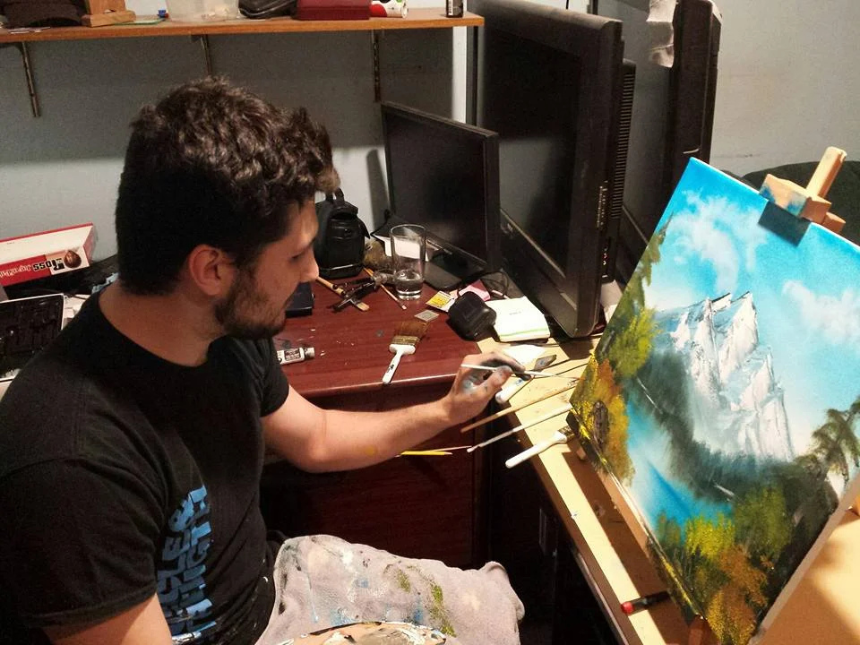
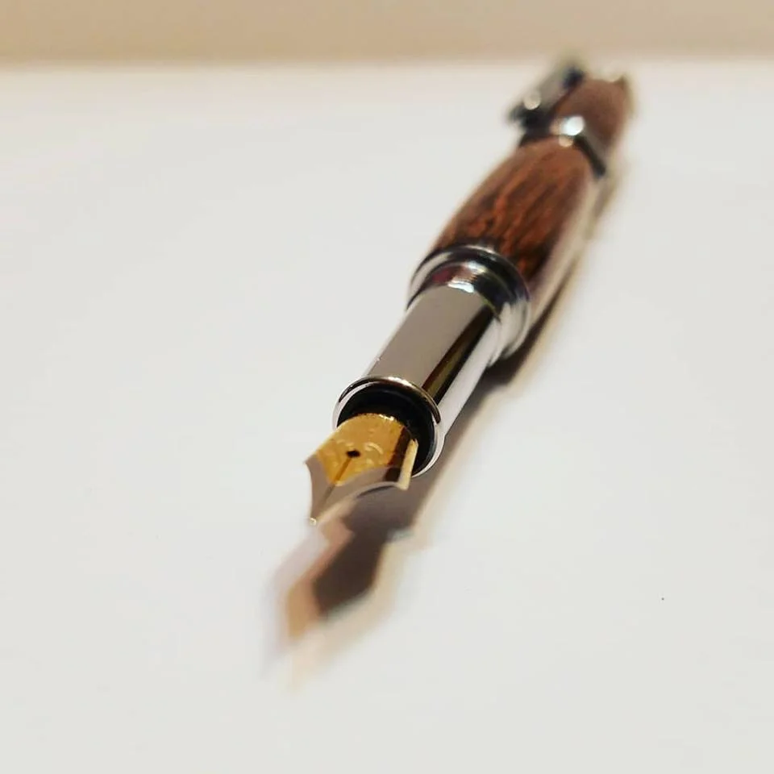

About
Coastal Craft Circuit LLC is all about me, Frank Pellicano. Check out my history, workshop, and more.
Learn More →by Frank Pellicano
View My WorkBased out of the East Coast, I specialize in custom woodworking, scenery painting, and electronic design. There's no automation to it; each item is crafted by hand. I work closely with clients to ensure every detail is carved to perfection.

Coastal Craft Circuit LLC is all about me, Frank Pellicano. Check out my history, workshop, and more.
Learn More →
Interested in custom crafts tailored to your needs? Head over to the contact page and let me know the details!
Write to me for custom work →